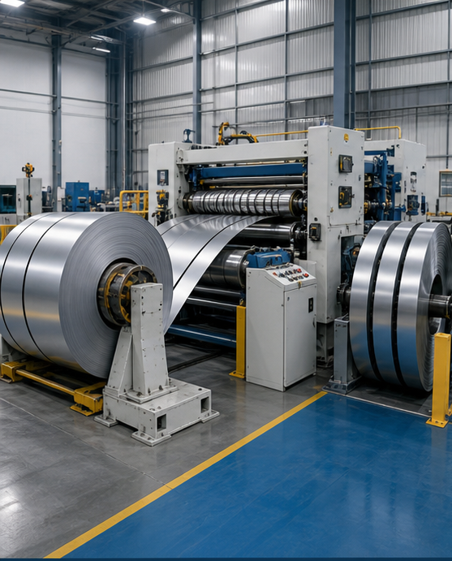
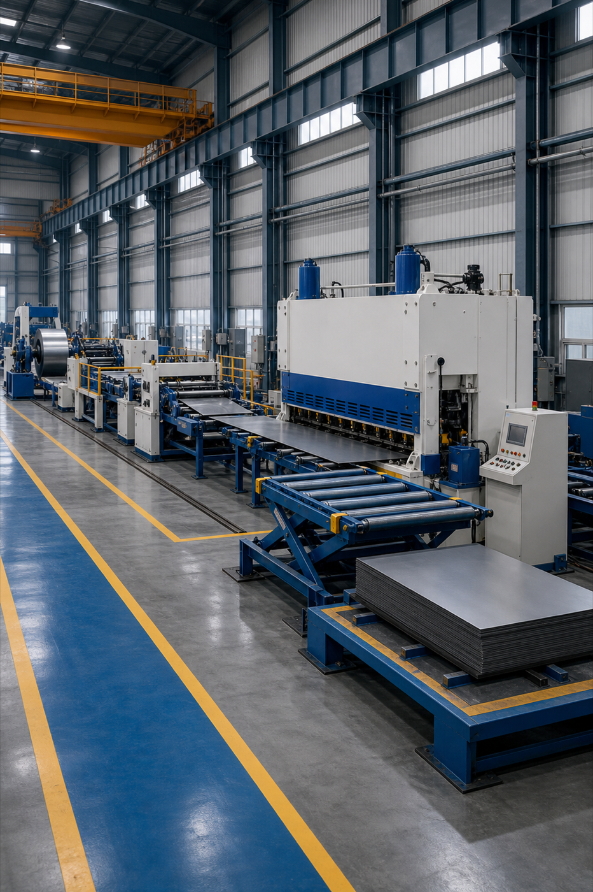
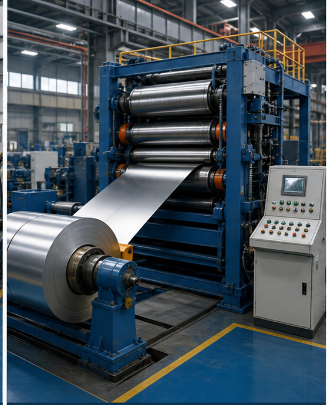
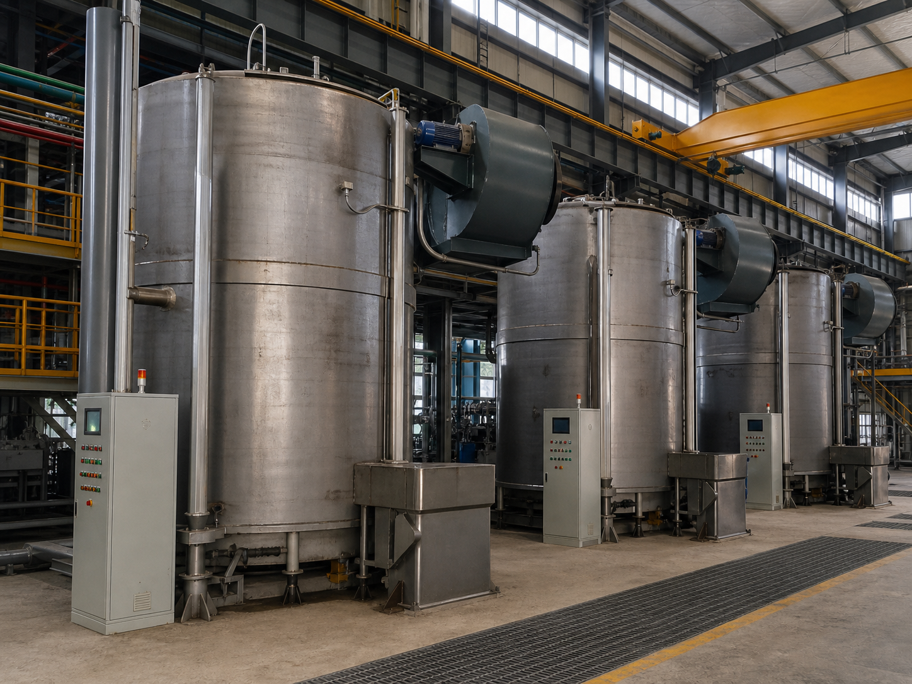

01
分条 / 纵剪
将宽幅卷材分切成客户生产线所需宽度，重点控制毛刺、镰刀弯、卷重和边部一致性。
从原卷到可直接上机生产的材料尺寸，KSC 提供分条、剪板、冷轧、退火和包装协同。
围绕客户冲压、切削、叠片和装配需求，稳定控制尺寸、公差、边部质量和材料状态。

将宽幅卷材分切成客户生产线所需宽度，重点控制毛刺、镰刀弯、卷重和边部一致性。

按长度、宽度和表面保护要求加工板料，适合冲压、激光切割、折弯和精密五金备料。

通过厚度压下和板形控制，满足更薄规格、更高尺寸精度或特殊硬度状态需求。

改善材料塑性、硬度和组织状态，帮助客户提升冲压、成形和后续热处理稳定性。
参数可作为初步沟通参考，实际加工范围会结合材料牌号、硬度、表面和包装要求确认。
| # | 设备 | 数量 | 厚度 | 宽度 | 成品尺寸 |
|---|---|---|---|---|---|
| 1 | 宽幅分条机 | 7 | 0.15~10.0 mm | 150~1650 mm | W: 50~1650 mm |
| 2 | 窄幅分条机 | 4 | 0.15~8.0 mm | 50~850 mm | W: 10~850 mm |
| 3 | 大剪板机 | 4 | 0.2~3.0 mm | 80~1350 mm | L: 200~3500 mm |
| 4 | 小飞剪机 | 3 | 0.15~2.2 mm | 80~850 mm | L: 100~2500 mm |
| 5 | 六辊轧机 | 1 | 0.3~2.5 mm | 80~350 mm | W: 80~350 mm |
| 6 | 四辊轧机 | 2 | 2.5~13.0 mm | 150~550 mm | W: 150~550 mm |
| 7 | 退火炉 | 14 | 0.15~13.0 mm | 80~1500 mm | 20/30/40/50 MT |
提供材料牌号、厚度、宽度、目标尺寸、公差、卷重和包装要求，我们可以协助判断可加工方案。